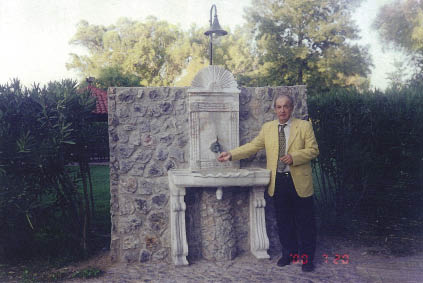

KKTC’nin Lefkoşe’deki Cumhurbaşkanlığı binası Başkanlık Sarayı olarak anılır. Ancak aslında tipik bir İngiliz sömürge yapısıdır.
İngiliz sömürgelerinde görülen rengiyle, biçimiyle, her şeyiyle bunu çağrıştırır.
Denktaş’ı Lefkoşe’de makamında ziyaret ettiğimde içim hep burkulurdu. Benim çenem durmaz, bir seferinde Denktaş’a çıtlattığımı hatırlıyorum.
Aklımdan hep, “Denktaş’ı ziyarete gelen bir diplomat ya da Avrupalı bir gazeteci, arabadan inerken karşısında eski bir Osmanlı çeşmesi görse ne güzel olurdu” düşüncesi geçerdi.
O sıralar, “AB karşısında Türk ilaç sanayinin rekabet durumu” konusunda DEVA ile bir çalışma yürütüyordum. Konuyu onlara açtım; “Çukurcuma’dan güzel ve görkemli bir eski çeşme bulalım ve onu Lefkoşe’deki Başkanlık Sarayı’nın bahçesine konmak üzere armağan edin,” dedim.
Tamam, dediler; çeşme arandı ve bulundu; Lefkoşe’ye nakledildi ve sarayı ziyarete gelenlerin arabadan inerken göreceği bir biçimde yerleştirildi.

Tabi bütün bunların yapılması üç dört aylık bir mesai gerektiriyordu, ama amacıma ulaşmıştım.
Rauf Denktaş’ın cumhurbaşkanlığı zamanında benim çabalarımla konulan bu çeşmeyi sonraki cumhurbaşkanları da göreceklerdi. Çok merak ediyorum, acaba bu İngiliz sömürge binası bahçesinde bu Osmanlı (ve Türk) çeşmesinin işi ne, diye düşünen oldu mu?
Çeşmenin musluğunu açtığınız zaman şarıl şarıl su akar, göstermelik değildir.